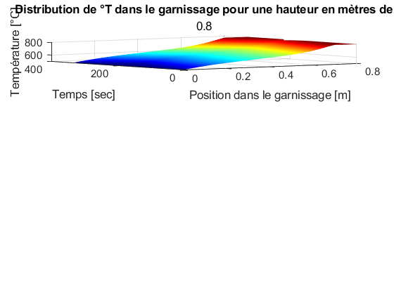
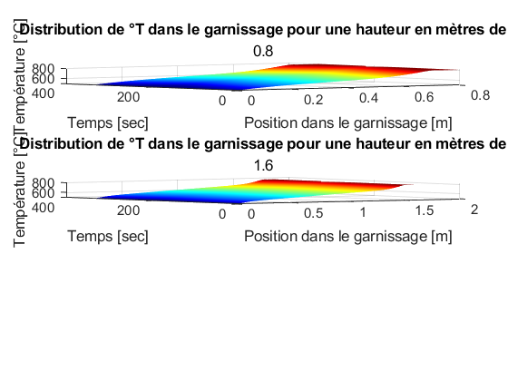
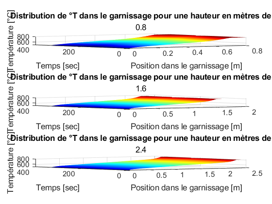
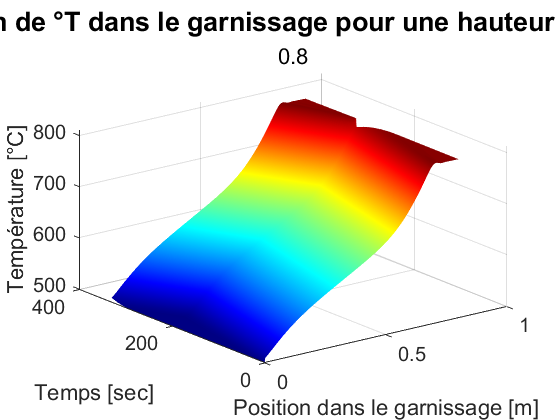
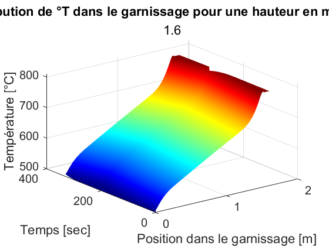
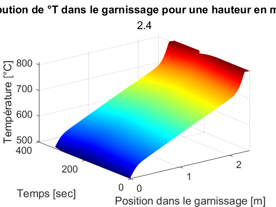
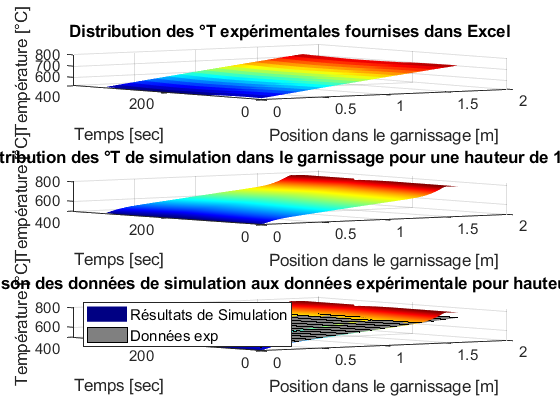
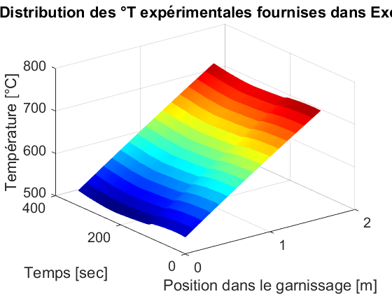
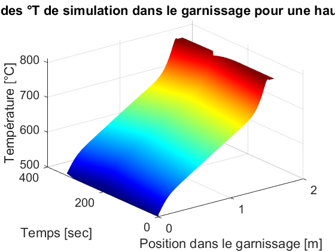
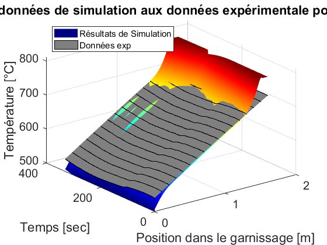

Contents
- Mandat 3.2 - Résolution de l'EDP de chaleur ;
- Importation des donnees empiriques ;
- Initiation des données: DONNÉES DES CYCLES DU RROT
- Boucle qui exécute la simulation pour toutes les valeurs de xmax du garnissage ;
- Boucle qui résoud l'EDP de chaleur pour imax cycle ;
- --------------------- Solution pour h_garnissage = 0.8 [m] ;
- --------------------- Solution pour h_garnissage = 1.6 [m] ;
- --------------------- Solution pour h_garnissage = 2.4 [m] ;
- --------------------- Comparaison des résultats simulés aux données expérimentales incluses dans le fichier Excel ;
- --------------------- Données expérimentales ;
- --------------------- Données simulées pour h_garnissage = 1.6 [m] ;
- --------------------- Comparaison des deux figures précédentes ;
Mandat 3.2 - Résolution de l'EDP de chaleur ;
Équipe 1:
- Loïc de Bluze,
- Anthony Drouin,
- Thomas Chaland,
- Simon Gauthier,
- Cédric Hébert,
- Louis-George Précourt,
Version en date du 6 décembre 2023;
clear, close all, clc global tswitch Tinit Phase dx
Importation des donnees empiriques ;
filename = 'Donnees brutes.xlsx'; % Définition du range de cellule comprennant les données expérimentales ; dataRange = 'A1:D33'; % Spécification de la feuille incluant les données d'intéret ; sheetName = 'Sheet3'; % Licture des données d'une feuille spécific du fichier Excel ; dataTable = readtable(filename, 'Sheet', sheetName, 'Range', dataRange); t_calib = dataTable{:,1}; T3_calib = dataTable{:,2}; T4_calib = dataTable{:,3}; T5_calib = dataTable{:,4}; X = t_calib'; Y = linspace(0, 1.6, 3); Z = [T3_calib T4_calib T5_calib]; % Interpolation ebtre es points connus, pour créer une surface à tracer % plus tard ; Xq = 0:330/256:330; Yq = 0:1.6/16:1.6; Zq = interp2(Z, 3, 'cubic');
Initiation des données: DONNÉES DES CYCLES DU RROT
imax = 20; % Nombre d'itérations maximale ; xswitch = 1000; % Nombre d'élément de discrétisation de l'espace ; xmax = [0.8 1.6 2.4]; % Hauteur(s) du garnissage ; % Gère le temps de simulation maximal pour pas trop % attendre que ça finisse de calculer ; tstart = cputime; % Temps 0 du début des calculs ; tlim = 600; % Temps maximum de calcul secondes ; flag = 0; % Contrôle la boucle « while » ; % Calcul et mise graphique de la solution de l'équation de chaleur ; figure while flag == 0
Boucle qui exécute la simulation pour toutes les valeurs de xmax du garnissage ;
for j = 1:length(xmax)
x = linspace(0, xmax(j), xswitch);
dx = x(2) - x(1);
tswitch = 110; % Un cycle dure environ 110 secondes ;
% selon les donnees du Excel ;
t = linspace(0, tswitch, tswitch);
Tinit = linspace(0, xmax(j), xswitch);
Tinit = interp1([0, xmax(j)/2, xmax(j)], [809.5 920 1025.5], Tinit, 'linear');
Boucle qui résoud l'EDP de chaleur pour imax cycle ;
m = 0;
for i = 1:imax
if cputime - tstart > tlim
fprintf('Temps de calcul trop long, change dequoi parce que ca finira pu de finir!\n')
flag = flag + 1;
break
else
Phase = 1;
sol1 = pdepe(m, @pdefun, @icfun, @bcfun, x, t); % sol = T(t, x) ;
Tinit = sol1(tswitch,:); % Assigne les toutes les températures
% au dernier temps de la solution de la
% Phase 1 à la solution initiale pour
% la Phase 2 qui va suivre ;
Phase = 2;
sol2 = pdepe(m, @pdefun, @icfun, @bcfun, x, t); % sol = T(t, x) ;
Tinit = sol2(tswitch,:); % Assigne les toutes les températures
% de la solution de la Phase 2
% à la solution initiale pour
% la Phase 3 qui va suivre ;
Phase = 3;
sol3 = pdepe(m, @pdefun, @icfun, @bcfun, x, t); % sol = T(t, x) ;
Tinit = sol3(tswitch,:); % Assigne les toutes les températures
% de la solution de la Phase 3
% à la solution initiale pour
% la Phase 1 qui va suivre ;
end
end
% Remettre en °C ;
sol1 = sol1 - 273;
sol2 = sol2 - 273;
sol3 = sol3 - 273;
soltot = [sol1; sol2; sol3];
t = linspace(0, 3*tswitch, 3*tswitch);
% Enregistrement de la solution pour la hauteur de garnissage à
% sa valeur t = tswitch dans l'aluminerie soit h = 0.8 [m] ;
if xmax(j) == 0.8 && i == imax
x08 = x;
tx08 = t;
solx08 = soltot;
end
% Enregistrement de la solution pour la hauteur de garnissage à
% sa valeur t = tswitch dans l'aluminerie soit h = 1.6 [m] ;
if xmax(j) == 1.6 && i == imax
x16 = x;
tx16 = t;
solx16 = soltot;
end
% Enregistrement de la solution pour la hauteur de garnissage à
% sa valeur t = tswitch dans l'aluminerie soit h = 2.4 [m] ;
if xmax(j) == 2.4 && i == imax
x24 = x;
tx24 = t;
solx24 = soltot;
end
% Définit la grosseur des écritures sur les axes;
frtz = 15;
% --------------------- Solution pour tous les hauteurs de garnissages incluses
% dans le vecteur xmax définit à la ligne 36;
subplot(length(xmax), 1, j), surf(x, t, soltot, 'edgecolor', 'none'), hold on
title('Distribution de °T dans le garnissage pour une hauteur en mètres de',...
xmax(j), 'FontSize', 0.75*frtz)
xlabel('Position dans le garnissage [m]','FontSize', 0.75*frtz),
ylabel('Temps [sec]', 'FontSize', 0.75*frtz),
zlabel('Température [°C]','FontSize', 0.75*frtz),
set(gca, 'FontSize', 0.75*frtz), colormap('jet')
% Condition pour briser la boucle « while » si une solution est
% trouvée avant l'atteinte de la limite de temps -tlim- ;
if j == length(xmax) && i == imax
fprintf('Convergence avant la fin du chrono!\n')
end
  Convergence avant la fin du chrono!
end
--------------------- Solution pour h_garnissage = 0.8 [m] ;
figure surf(x08, tx08, solx08, 'edgecolor', 'none'), title('\fontsize{20}Distribution de °T dans le garnissage pour une hauteur en mètres de', xmax(1)) xlabel('Position dans le garnissage [m]','FontSize', frtz), ylabel('Temps [sec]', 'FontSize', frtz), zlabel('Température [°C]','FontSize', frtz), set(gca, 'FontSize', frtz), colormap('jet')
--------------------- Solution pour h_garnissage = 1.6 [m] ;
figure surf(x16, tx16, solx16, 'edgecolor', 'none'), title('Distribution de °T dans le garnissage pour une hauteur en mètres de', xmax(2)) xlabel('Position dans le garnissage [m]','FontSize', frtz), ylabel('Temps [sec]', 'FontSize', frtz), zlabel('Température [°C]','FontSize', frtz), set(gca, 'FontSize', frtz), colormap('jet')
--------------------- Solution pour h_garnissage = 2.4 [m] ;
figure surf(x24, tx24, solx24, 'edgecolor', 'none'), title('Distribution de °T dans le garnissage pour une hauteur en mètres de', xmax(3)) xlabel('Position dans le garnissage [m]','FontSize', frtz), ylabel('Temps [sec]', 'FontSize', frtz), zlabel('Température [°C]','FontSize', frtz), set(gca, 'FontSize', frtz), colormap('jet')
--------------------- Comparaison des résultats simulés aux données expérimentales incluses dans le fichier Excel ;
------- Données expérimentales ;
figure subplot(3,1,1), surf(Yq, Xq, Zq,'edgecolor', 'none'), hold on, title('Distribution des °T expérimentales fournises dans Excel'); xlabel('Position dans le garnissage [m]','FontSize', 0.75*frtz), ylabel('Temps [sec]', 'FontSize', 0.75*frtz), zlabel('Température [°C]','FontSize', 0.75*frtz), set(gca, 'FontSize', 0.75*frtz), colormap('jet') % ------- Données de simulation pour h = 1.6 [m] ; subplot(3,1,2), surf(x16, tx16, solx16, 'edgecolor', 'none'), title('Distribution des °T de simulation dans le garnissage pour une hauteur de 1.6 [m]'); xlabel('Position dans le garnissage [m]','FontSize', 0.75*frtz), ylabel('Temps [sec]', 'FontSize', 0.75*frtz), zlabel('Température [°C]','FontSize', 0.75*frtz), set(gca, 'FontSize', 0.75*frtz), colormap('jet') % ------- Comparaison des données précédentes ; subplot(3,1,3), surf(x16, tx16, solx16, 'edgecolor', 'none'), colormap('jet'), freezeColors, hold on surf(Yq, Xq, Zq, 'FaceLighting','gouraud',... 'MeshStyle','column',... 'SpecularExponent',1,... 'SpecularStrength',1,... 'DiffuseStrength',1,... 'AmbientStrength',0.4,... 'FaceColor',[0.5 0.5 .5],... 'AlignVertexCenters','on',... 'LineWidth',0.2,... 'EdgeAlpha',1); freezeColors, title('Comparaison des données de simulation aux données expérimentale pour hauteur de 1.6 [m]'); xlabel('Position dans le garnissage [m]','FontSize', 0.75*frtz), ylabel('Temps [sec]', 'FontSize', 0.75*frtz), zlabel('Température [°C]','FontSize', 0.75*frtz), set(gca, 'FontSize', 0.75*frtz) lgd = legend({'Résultats de Simulation','Données exp'}, 'FontSize', 0.75*frtz); lgd.Location = 'northwest';
--------------------- Données expérimentales ;
figure surf(Yq, Xq, Zq,'edgecolor', 'none'), hold on, title('Distribution des °T expérimentales fournises dans Excel'); xlabel('Position dans le garnissage [m]','FontSize', frtz), ylabel('Temps [sec]', 'FontSize', frtz), zlabel('Température [°C]','FontSize', frtz), set(gca, 'FontSize', frtz), colormap('jet')
--------------------- Données simulées pour h_garnissage = 1.6 [m] ;
figure surf(x16, tx16, solx16, 'edgecolor', 'none'), title('Distribution des °T de simulation dans le garnissage pour une hauteur de 1.6 [m]'); xlabel('Position dans le garnissage [m]','FontSize', frtz), ylabel('Temps [sec]', 'FontSize', frtz), zlabel('Température [°C]','FontSize', frtz), set(gca, 'FontSize', frtz) , colormap('jet')
--------------------- Comparaison des deux figures précédentes ;
figure surf(x16, tx16, solx16, 'edgecolor', 'none'), colormap('jet'), freezeColors, hold on surf(Yq, Xq, Zq, 'FaceLighting','gouraud',... 'MeshStyle','column',... 'SpecularExponent',1,... 'SpecularStrength',1,... 'DiffuseStrength',1,... 'AmbientStrength',0.4,... 'FaceColor',[0.5 0.5 .5],... 'AlignVertexCenters','on',... 'LineWidth',0.2,... 'EdgeAlpha',1); freezeColors, title('Comparaison des données de simulation aux données expérimentale pour hauteur de 1.6 [m]'); xlabel('Position dans le garnissage [m]','FontSize', frtz), ylabel('Temps [sec]', 'FontSize', frtz), zlabel('Température [°C]','FontSize', frtz), set(gca, 'FontSize', frtz), colormap('jet') lgd = legend({'Résultats de Simulation','Données exp'}, 'FontSize', 0.75*frtz); lgd.Location = 'northwest'; return
end % --------------------- Si la simulation est arrêter par la fin du chrono ; if flag == 1 fprintf('Impossible de résoudre dans les délais!\n') end